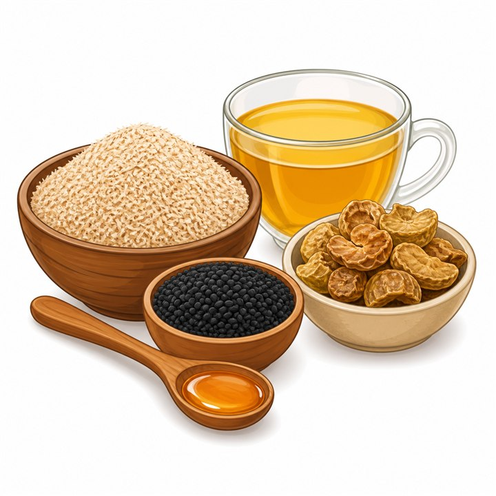

Girosto Special
শুকনো মাশরুম | Dried Mushroom Price in Bangladesh
SKU: GIR-188
তাজা মাশরুম কিনে এনে দুই-তিন দিনের মধ্যে রান্না করতে হয়, নইলে নষ্ট হয়ে যায়। এই ঝামেলা এড়াতে চাইলে ঘরে শুকনো মাশরুম রাখা একটি সহজ সমাধান। গিরস্তের শুকনো মাশরুম আগে থেকে বাছাই করা, পরিষ্কার ও শুকানো, তাই যখন ইচ্ছা পানিতে ভিজিয়ে রান্নায় ব্যবহার করা যায়।
শুকানোর ফলে মাশরুমের পানি কমে যায়, কিন্তু ঘ্রাণ আর স্বাদ আরও ঘন হয়ে ওঠে। ভিজিয়ে নিলে এটি আবার নরম হয়, আর খিচুড়ি, পোলাও, স্যুপ, নুডলস কিংবা ভুনায় আলাদা এক মাটির মতো সুগন্ধ যোগ করে। সপ্তাহের ব্যস্ত দিনে বাজারে না গিয়েও পুষ্টিকর কিছু রান্নার ইচ্ছা থাকলে এটি কাজে আসবে।
৳250
Product availability, appearance, and delivery time may vary. Contact Girosto if you need sourcing or ingredient details.
গিরস্তের শুকনো মাশরুম কেন বেছে নেবেন?
শুকনো মাশরুমের মান নির্ভর করে বাছাই, শুকানোর পদ্ধতি আর মোড়কের ওপর। গিরস্ত এই তিনটি ধাপেই নজর রাখে, যাতে প্যাকেট খোলার পর ভালো ঘ্রাণ ও স্বাদ পাওয়া যায়।
- বাছাই করা মাশরুম: ভাঙা, দাগধরা ও নিম্নমানের টুকরো আলাদা করে প্যাক করা হয়।
- দীর্ঘদিন সংরক্ষণযোগ্য: পানি কমে যাওয়ায় সঠিকভাবে রাখলে অনেক দিন ভালো থাকে।
- Preservative নেই: সংরক্ষণের জন্য আলাদা রাসায়নিক যোগ করা হয় না।
- কৃত্রিম রঙ নেই: মাশরুমের নিজস্ব রঙই বজায় থাকে।
- ঘন স্বাদ ও ঘ্রাণ: শুকানোর পর স্বাদ কেন্দ্রীভূত হয়, তাই অল্প পরিমাণেই রান্না জমে ওঠে।
- সহজ ব্যবহার: পানিতে ভিজিয়ে নিলেই রান্নার জন্য তৈরি।
শুকনো মাশরুম কী?
শুকনো মাশরুম হলো তাজা মাশরুম থেকে পানি সরিয়ে নেওয়া একটি সংরক্ষিত রূপ। মাশরুম পরিষ্কার করে পাতলা করে কাটা হয়, তারপর রোদে, বাতাসে বা নিয়ন্ত্রিত তাপে শুকানো হয়। এতে ব্যাকটেরিয়া ও ছত্রাক জন্মানোর সুযোগ কমে, ফলে ফ্রিজ ছাড়াই মাসের পর মাস রাখা যায়।
বাংলাদেশের বাজারে সাধারণত অয়েস্টার (ঝিনুক) মাশরুম ও বাটন মাশরুম বেশি চোখে পড়ে। শুকনো অবস্থায় এগুলোর আকার ছোট হয়ে যায়, রঙ কিছুটা গাঢ় হয় এবং ঘ্রাণ আরও স্পষ্ট হয়। পানিতে ভেজালে আবার ফুলে ওঠে ও নরম হয়।
তাজা মাশরুম ও শুকনো মাশরুমের পার্থক্য
তাজা ও শুকনো মাশরুমের মধ্যে পুষ্টিগুণ, স্বাদ, সংরক্ষণ পদ্ধতি ও ব্যবহারের বেশ কিছু পার্থক্য রয়েছে, যা জেনে আপনার প্রয়োজন অনুযায়ী সঠিকটি বেছে নিতে পারবেন।
|
বিষয় |
তাজা মাশরুম |
শুকনো মাশরুম |
|
সংরক্ষণকাল |
কয়েক দিন, ফ্রিজে রাখতে হয় |
অনেক দিন, ফ্রিজ ছাড়াই |
|
স্বাদ ও ঘ্রাণ |
হালকা ও কোমল |
ঘন ও গভীর |
|
রান্নার প্রস্তুতি |
ধুয়ে সরাসরি রান্না |
ভিজিয়ে নরম করে নিতে হয় |
|
পানির পরিমাণ |
বেশি |
খুব কম |
|
ওজন ও জায়গা |
ভারী, বেশি জায়গা লাগে |
হালকা, অল্প জায়গায় রাখা যায় |
|
পাওয়ার সুবিধা |
মৌসুম ও দোকানভেদে অনিয়মিত |
সারা বছর হাতের কাছে রাখা যায় |
শুকনো মাশরুমের উপকারিতা
মাশরুম বহু দেশের খাবারে নিয়মিত ব্যবহৃত হয়। সাধারণভাবে এটি নিয়ে যেসব দিক আলোচিত হয়, তার সংক্ষিপ্ত ধারণা নিচে দেওয়া হলো।
১. আঁশের উৎস
মাশরুমে খাদ্যআঁশ থাকে, যা হজম প্রক্রিয়ায় সহায়ক ভূমিকা রাখে। শুকনো অবস্থায় একই ওজনে আঁশের ঘনত্ব তুলনামূলক বেশি থাকে।
২. উদ্ভিজ্জ প্রোটিনের সংযোজন
নিরামিষ বা কম মাংসের খাদ্যতালিকায় মাশরুম খাবারে প্রোটিনের একটি অতিরিক্ত উৎস হতে পারে। তবে এটি সম্পূর্ণ প্রোটিনের বিকল্প নয়, বরং ডাল, ডিম বা অন্যান্য খাবারের সঙ্গে সহায়ক হিসেবে ভালো।
৩. ভিটামিন ও খনিজ
মাশরুমে বি-ভিটামিন এবং সেলেনিয়াম, পটাশিয়ামের মতো খনিজ উপাদান পাওয়া যায়। মাশরুমের জাত ও চাষ পদ্ধতির ওপর এর পরিমাণ বদলাতে পারে।
৪. কম ক্যালোরির খাবার
মাশরুমে স্বাভাবিকভাবে চর্বি ও ক্যালোরি কম। তাই ওজন ও খাদ্যাভ্যাস নিয়ে সচেতন ব্যক্তিরা এটি সহজেই খাবারে যোগ করতে পারেন।
Note: উল্লেখ্য, কোনো বিশেষ স্বাস্থ্যসমস্যা বা খাবারে অ্যালার্জি থাকলে নতুন খাবার যুক্ত করার আগে চিকিৎসক বা পুষ্টিবিদের পরামর্শ নেওয়া ভালো।
শুকনো মাশরুম কীভাবে ভেজাবেন ও রান্না করবেন?
শুকনো মাশরুম রান্নার আগে ঠিকমতো ভিজিয়ে নেওয়া জরুরি। এতে এটি নরম হয় এবং স্বাদ ভালোভাবে বের হয়।
ভেজানোর নিয়ম:
- প্রয়োজনীয় পরিমাণ মাশরুম একটি বাটিতে নিন।
- মাশরুম ডুবে যায় এমন পরিমাণ হালকা গরম পানি ঢালুন।
- ২০–৩০ মিনিট ঢেকে রাখুন, যতক্ষণ না সম্পূর্ণ নরম হয়।
- হাত দিয়ে হালকা চেপে বাড়তি পানি ঝরিয়ে নিন।
- ভেজানো পানি ফেলে না দিয়ে ছেঁকে স্যুপ বা ভুনায় ব্যবহার করতে পারেন, এতে স্বাদ বাড়ে।
- এবার কেটে নিয়ে পছন্দমতো রান্না করুন।
সহজ রান্নার আইডিয়া:
- মাশরুম ভুনা: পেঁয়াজ, রসুন ও মশলার সঙ্গে কষিয়ে নিন।
- মাশরুম পোলাও বা খিচুড়ি: চাল বসানোর সময় ভেজানো মাশরুম যোগ করুন।
- স্যুপ: সবজি ও ছেঁকে রাখা ভেজানো পানি দিয়ে ফুটিয়ে নিন।
- ফ্রাইড রাইস ও নুডলস: ছোট করে কেটে সবজির সঙ্গে ভেজে নিন।
- ডিম বা সবজির সঙ্গে স্ক্র্যাম্বল: হালকা তেলে ভেজে সকালের নাশতায় রাখুন।
শুকনো মাশরুম কখন ও কোথায় ব্যবহার করবেন?
- ব্যস্ত দিনে দ্রুত রান্নার জন্য
- নিরামিষ বা কম মাংসের খাবারে স্বাদ বাড়াতে
- অতিথি আপ্যায়নে পোলাও, রোস্ট বা স্যুপে ভিন্নতা আনতে
- বাজারে যাওয়ার সুযোগ না থাকলে ঘরে মজুত রাখতে
শুকনো মাশরুম সংরক্ষণের নিয়ম
সঠিকভাবে রাখলে শুকনো মাশরুমের ঘ্রাণ ও মান অনেক দিন ভালো থাকে।
- প্যাকেট খোলার পর বায়ুরোধী কাচ বা প্লাস্টিকের পাত্রে রাখুন।
- স্যাঁতসেঁতে জায়গা ও পানির ছিটা থেকে দূরে রাখুন।
- সরাসরি রোদ এবং চুলার তাপ থেকে সরিয়ে রাখুন।
- ঠান্ডা ও শুষ্ক স্থানে রাখুন।
- ভেজা চামচ বা হাত পাত্রে ঢোকানো এড়িয়ে চলুন।
- প্যাকেটে লেখা মেয়াদের মধ্যে ব্যবহার করুন।
শুকনো মাশরুম Specification
|
বিষয় |
বিস্তারিত |
|
পণ্যের নাম |
শুকনো মাশরুম |
|
Product Type |
Dried Mushroom |
|
প্রসেসিং |
পরিষ্কার করে শুকানো |
|
Preservative |
যোগ করা হয় না |
|
Artificial Colour |
ব্যবহার করা হয় না |
|
ভেজানোর সময় |
আনুমানিক ২০–৩০ মিনিট |
|
ব্যবহার |
ভুনা, পোলাও, স্যুপ, নুডলস, খিচুড়ি |
|
Storage |
ঠান্ডা, শুষ্ক ও বায়ুরোধী পাত্রে |
|
বিক্রেতা |
Girosto – গিরস্ত |